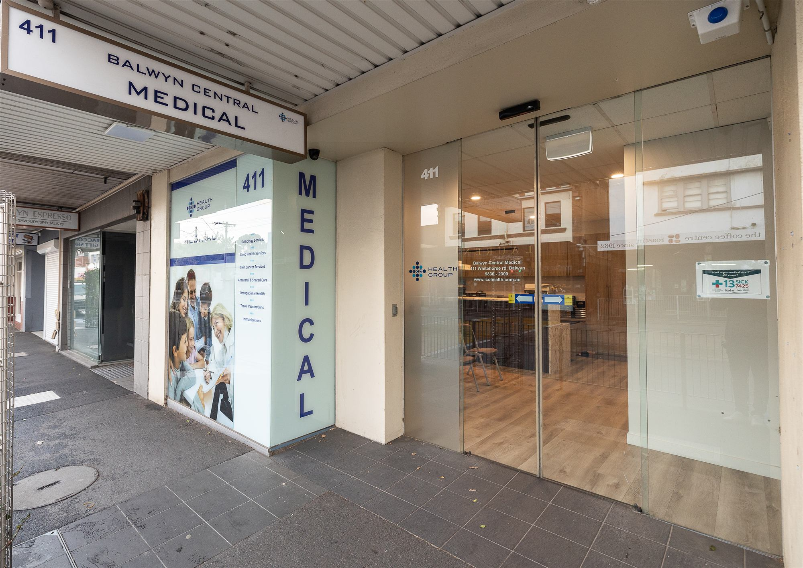
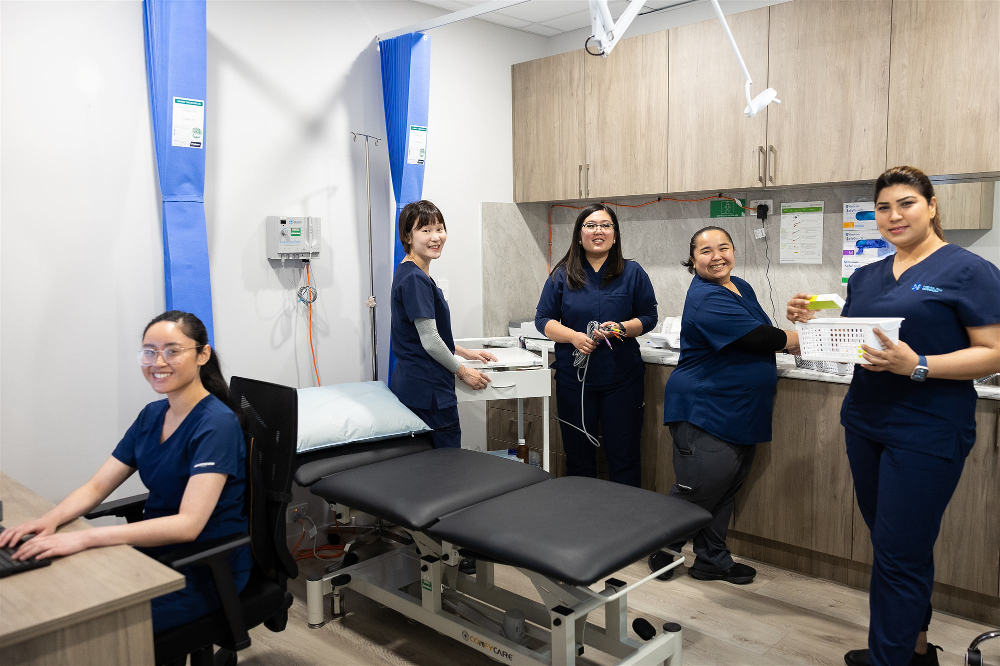

A family practice in the heart of Balwyn
Since 2015 we've looked after Balwyn families on Whitehorse Road, with GPs, nurses, a pharmacy and pathology all in the one place.

A local general practice, set up so more of your care can happen in one visit.
Our practice
Balwyn Central Medical opened in 2015. We're a fully accredited general practice and part of ICO Health Group, and we care for people of every age, from newborns to grandparents.
Across our two sites on Whitehorse Road you'll find comfortable waiting areas, private consultation and treatment rooms, and registered nurses on site whenever we're open. Priceline Pharmacy Balwyn and Dorevitch pathology collection are in the same building, so you can see your GP, fill a script and have tests done without a second trip.
- Fully accreditedGeneral practice since 2015
- Bulk billingConcession cardholders and children 15 and under, weekdays
- Two sites427 and 411 Whitehorse Rd, Balwyn

Registered nurses, always on site
Our nurses work alongside your GP every day. They help with immunisations, health assessments, care plans, dressings and procedures in the treatment room, and they're often the friendly face who follows up after your visit.
Simple, coordinated care
Booking, records and results, handled simply, so you can focus on feeling better.
Online or with reception
Book any appointment through our online booking system, or call our reception team and they'll find a time that suits.
Book onlineNew patients welcome
New to the practice? We can arrange for your medical records to be transferred from your previous doctor, so your history comes with you.
New patient formsTelehealth and after hours
See your doctor by phone or video when coming in isn't practical. After hours, home visits for existing patients are available through 13SICK on 13 74 25. In an emergency, always call 000.
About telehealthVision, mission and values
A trusted local practice
To be a trusted local practice for Balwyn families.
Care for the whole person
To support the health and wellbeing of the whole person, with care that is accessible and centred on each patient.
What we hold to
Careful clinical care. Kind, inclusive and ethical treatment. Teamwork. Continuity you can rely on.
Meet the team behind your care
Our GPs, nurses and allied health partners work together across both Balwyn sites.